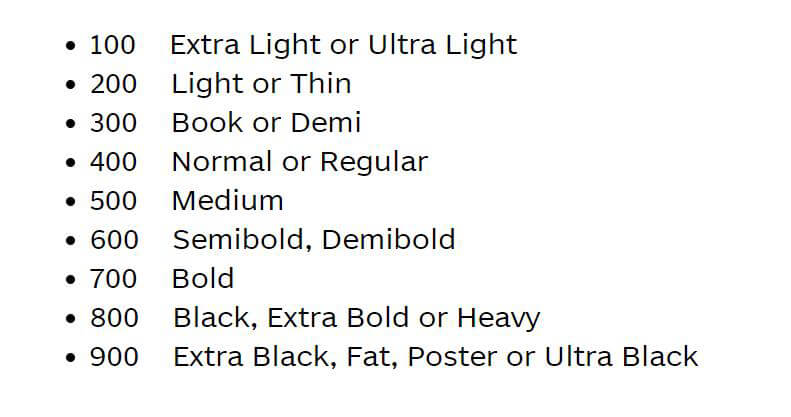

Сегодня мы познакомимся со стартовым шаблоном для верстки сайтов OptimizedHTML 4. OptimizedHTML - это стартер, который подойдет для верстки практически любого проекта, значительно экономит ваше время в начале верстки и содержит набор базовых модулей. Стартовый шаблон основан на Gulp и его полезных модулях, таких, как BrowserSync, Sass, Uglify, CleanCSS, Autoprefixer для постобработки и Rsync для деплоя.

Полезные материалы:
- Стартер на GitHub: OptimizedHTML 4
- Bootstrap сетка. Подробное руководство
- Sass для самых маленьких
- Gulp для самых маленьких
- Документация Gulp на русском
- Открыть окно Bash здесь (Скачать)
Внимание! Для использования данной возможности, в системе Windows должна быть установлена подсистема WSL. - Коллекция веб-шрифтов (300 шт.): Скачать
Размеры шрифтов в цифрах:
В предыдущем уроке мы знакомились с новой версией Bootstrap, которая вышла из беты совсем недавно и появилась потребность в обновлении ветки уже знакомого многим OptimizedHTML. Четвертая версия стартера содержит сам фреймворк Bootstrap, удобные инструменты для работы с фреймворком и множество других полезностей.
Данное видео понадобится нам для изучения уроков, в которых будем верстать с использованием сетки Bootstrap. Сразу отвечу на вопрос - содержатся ли компоненты Bootstrap в данном стартере или только сетка? В отличие от предыдущих версий OptimizedHTML, четвертая версия содержит полную копию Sass проекта Bootstrap, а значит содержит все компоненты Bootstrap. Однако по умолчанию в проект подключена только сетка и если вам необходимо использовать другие компоненты фреймворка, проблем с их подключением возникнуть не должно. Как это сделать мы разберем в этом уроке.
Премиум уроки от WebDesign Master


Другие уроки по теме «Инструменты»
- Настройка Parcel для веб-разработки
- Tailwind CSS для начинающих. Подробный урок по подключению, настройке и использованию
- Настройка VS Code для веб-разработки
- Starter - Простой стартер для веб-разработки
- Урок по хостингу от А до Я. Сайты, базы, домены, SSL, SSH, sFTP
- Gulp - Актуальное и исчерпывающее руководство для самых маленьких